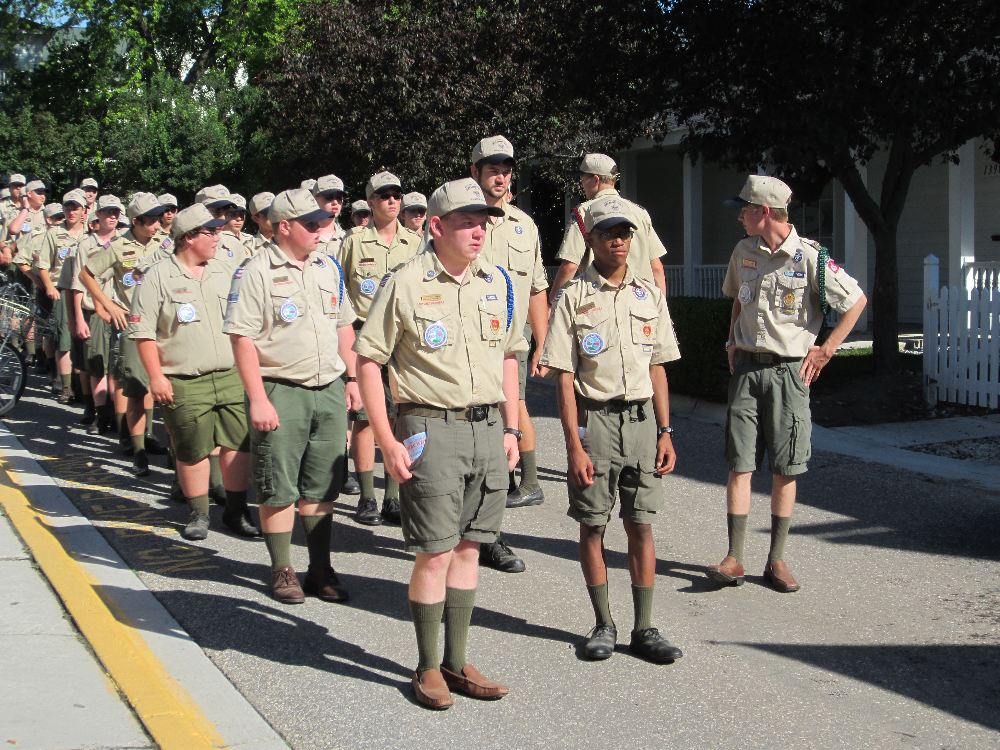
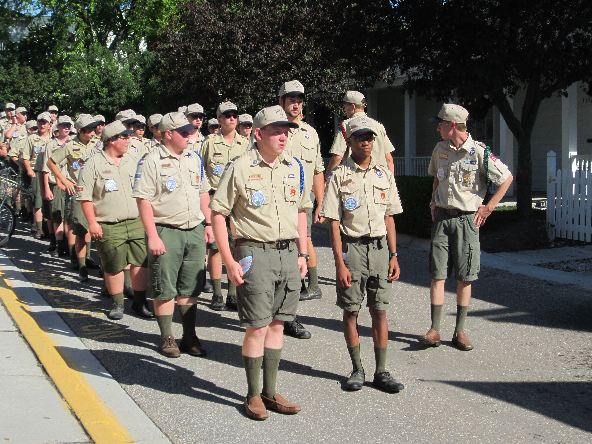
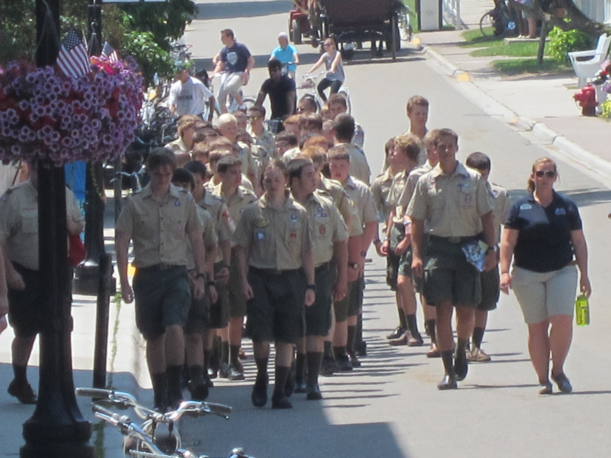
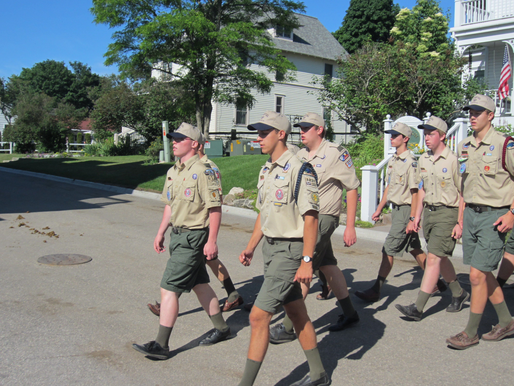
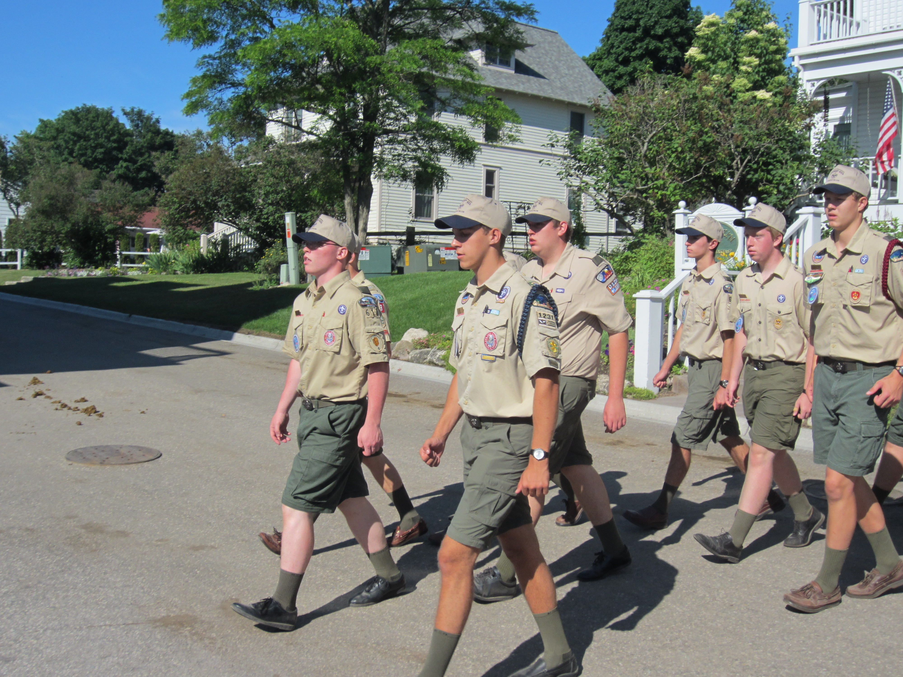
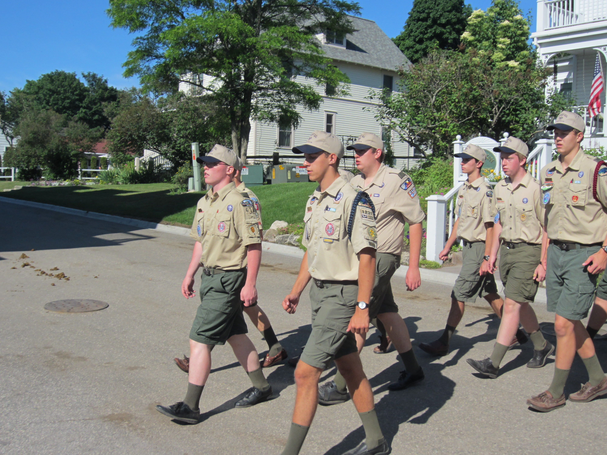

Picture Gallery
There are many more images than will load conveniently, so the excess will be loaded as you scroll. If they do not, scroll up once and then resume going down.
Full images can be found Here.


 


 

